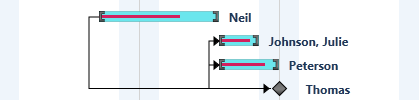

You can change the progress indicator color as needed using the ProgressIndicatorBackground API. By default progress indicator will be displayed in black.
The following codes will illustrate how to specify the progress indicator color:
|
[XAML]
<!-- Changing the progress indicator background color to violet --> <gantt:GanttControl x:Name="Gantt" ProgressIndicatorBackground="Violet" />
|
|
[C#]
// Changing the progress indicator color to Violet. this.Gantt.ProgressIndicatorBackground = new SolidColorBrush(Colors.Violet);
|

Figure 47: Custimized Progress Indicator Color